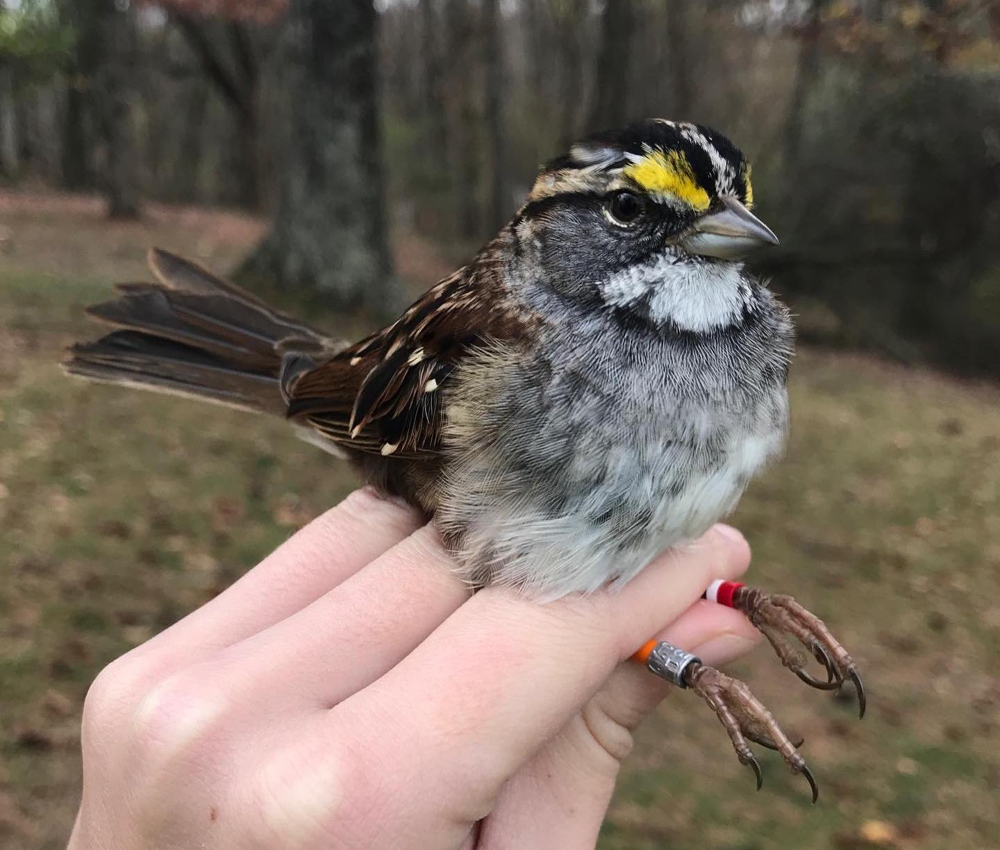
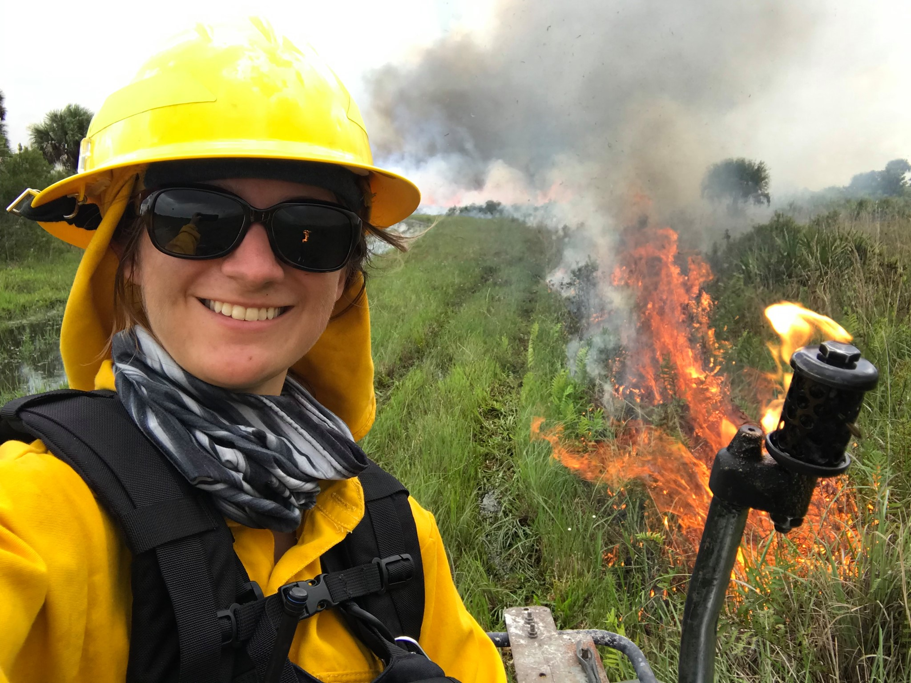

Master’s of Science in Biology - 2020-2022
In progress (24/32 credits completed)
Austin Peay State University, Clarksville, TN
B.A. Biology - 2014-2018
Minor in Studio Art
Calvin University, Grand Rapids, MI
2011-2014
Kellogg Community College, Battle Creek, MI
Certifications and Trainings

2018-2021 - Bird Banding Training
Able to properly extract and handle birds caught using a mist nest
Capable of proper band application and data recording
Trained in species ID and identifying bird age factors
Able to safely extract blood samples
2018, 2020 - NWCG Certified Type 2 Wildland Firefighter
Trained to properly and safely start, control, and put out wildfires in prescribed burns
Participated in 6 prescribed burns on Florida Dry Prairie
Certified through the Michigan DNR & Florida State Parks Service
2018 - Trimble GPS Certified
Trained to use device, download, and analyze data onto GPS Pathfinder Office
Certified through Calvin University
2018 - ArcGIS Software Certified
Able to use ArcGIS program to create 2D and 3D maps, including zoning, population density, population ranges, and use data downloaded online or from personal data
Certified through Calvin University
2018 - FAA Trained Drone Pilot
Trained to pilot drone for field research in both day and night Training approved through the FAA
Training approved through the FAA
2016, 2018 - Herbicide Application Certified
Trained in safely using handheld herbicide sprayer
ertified through Pierce Cedar Creek Research Institute and Calvin University
2016 - Wilderness First Aid Certified
Trained in recognizing and handling first aid situations in wilderness situations
Certified through Calvin University